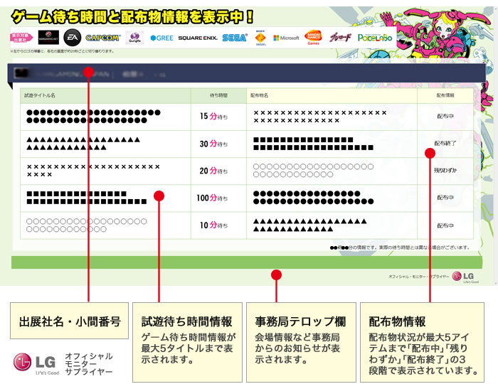
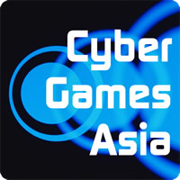
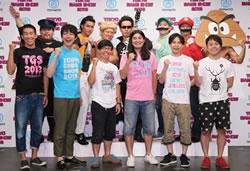
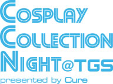
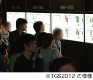
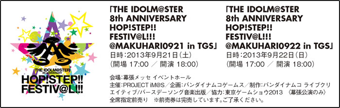

主催者企画
HALL1-9、西駐車場 当日券売場付近 デジタルサイネージ
大規模ブースの試遊待ち時間や配布物情報をチェック
東京ゲームショウ初の設置となるデジタルサイネージは、出展社から提供されたブースの試遊待ち時間や配布物の情報、事務局からのお知らせを表示しています。
表示対象出展社11社の情報がローテーションで切り替わります。設置場所は、会場内外の全12カ所で、各ホールとも最低1カ所はあります。
気になるブースを事前にチェックして、有効に会場を回ろう！

【表示対象出展社名（50音順）】
WARGAMING JAPAN、エレクトロニック・アーツ、カプコン、ガンホー・オンライン・エンターテイメント、グリー/ポケラボ、スクウェア・エニックス、セガ、ソニー・コンピュータエンタテインメント、日本マイクロソフト、バンダイナムコゲームス、ブシロード
HALL9 TGS大抽選会【無料】
来場者全員にチャンス！プレミアムグッズが当たる！？
一般公開日の2日間＜ 9/21（土）、22（日）＞はホール9の特設会場にて大抽選会を実施します。
抽選で当たりが出ると１点、お好きな品を差し上げます。出展社の人気配布物が当たるチャンス！ぜひ、ご参加ください。
| 日 時 | 9月21日（土）10:00〜16:30（最終受付 16：15） 9月22日（日）10:00〜16:30（最終受付 16：15）
|
|---|---|
| 会 場 | ホール9 TGS大抽選会場 |
| 抽選方法 | ガラガラ抽選機を回し、当たりが出ると１点、お好きな景品を選択することができます。 はずれの場合でも、記念品をプレゼント！
ダブルチャンス日本ゲーム大賞 フューチャー部門の投票者には大抽選会で2回抽選できる「大抽選会W チャンス券」を配布します。 |
HALL7、2Fコンコース、屋外中央広場、HALL9 TGS2013 公式グッズ
メインキャラクターを大胆にデザイン！売り切れ必至！？
TGS2013公式グッズは、毎年人気のTシャツから初登場のリストバンドまで盛りだくさん。
形部一平氏が描いたメインキャラクターを大胆に配したり、「GAMEは進化し続ける。」をテーマにしたデザインを取り入れるなど、計21 種類をそろえました。
さらに今年は、TOKYO GAMESHOWとTokyo Otaku ModeのコラボTシャツも登場！
[詳細はこちら]
HALL2 インターナショナルラウンジ
世界のゲームファンと交流しよう！
世界中からの来場者を迎える東京ゲームショウ。
そんな彼らをもてなし、クールな日本文化をもっと知ってもらうために、世界中の来場者が交流できるラウンジを設けます。
この企画を、日本のポップカルチャーを海外に情報発信する「Tokyo Otaku Mode（TOM）」とコラボレーション。Tokyoの「いま」を体感いただけます。
また、TOM人気クリエイターによる、ゲームをテーマにしたライブペインティングや、TGS×TOMのコラボTシャツの販売も行います。
HALL7 eスポーツゲーム競技会「Cyber Games Asia」（CGA）
世界へ羽ばたく日本のトッププレイヤーが決まる！

eスポーツゲーム競技会「Cyber Games Asia」（CGA：サイバー・ゲームズ・アジア）は、日本を含むアジア地域から「PCオンラインゲーム」のトップ選手やチームを招へいし、東京ゲームショウ2013会場で競技を繰り広げる国際的な大会であり、世界へ羽ばたく日本のトッププレイヤーを決定する大会です。
9月21日（土）は「サドンアタック・日韓エキシビジョンマッチ2013日本代表決定戦」を開催。
『サドンアタック』は日本でも高い人気を誇るFPS（ファースト・パーソン・シューティング）ゲームです。
日本と韓国のトッププレイヤーによる、「『サドンアタック』日韓対抗戦」の参加権をかけた国内代表決定戦を行います。
勝ったチームは、10月に、世界でも有数の実力を持つ韓国代表チームに直接対決を挑みます。
9月22日（日）は、人気格闘ゲーム『鉄拳タッグトーナメント2』のエキシビションマッチ「Cyber Games Asia」を行います。
シンガポールから強豪プレイヤーを招へいし、日本の代表選手とハイレベルな戦いを繰り広げます。
「World of Tanks G-STAR 日本代表決定戦」では、今年7月に日本に本格進出したWARGAMING JAPANを代表するタイトル『World of Tanks』の日本代表を決定。
勝利チームは11月に韓国G-STARで開催される世界大会に出場することができます。
eスポーツの面白さを、展示ホール7の特設会場でぜひ体感してください。
[詳細はこちら]
HALL9 よしもと×東京ゲーム笑
TGS2013によしもと“ゲーム好き” 芸人が参戦

よしもとがTGS2013と本格的にコラボレーション！
ゲーム好き芸人が、東京ゲームショウ2013の見どころを紹介したり、各ブースのステージに出演するほか、ホール９の「よしもと×東京ゲーム笑」特設ステージでは、「お笑い×ゲーム」をテーマにした様々な企画を実施。
この日のために仕込んだ（!?）ゲームネタや、ゲーム好き芸人が「懐かしのゲーム談義」「初めて買ったゲーム」「一番やりこんだゲーム」などを熱く語りあうトークイベントなど、ニコニコ生放送やよしもとが運営する動画サイトYNNでも放送しちゃいます！
TGSも進化し続ける。これが新しいTGSの楽しみ方！
HALL8 Cosplay CollectionNight @TGS presented by Cure
新感覚のコスプレショウが今年も開催！

日本最大のコスプレコミュニティサイト「Cure」がお届けする「動くコスプレ」のステージショウ。
コスプレでのパフォーマンス、ファッションショウあり、ニコニコ動画で有名な踊り手のダンスありの新しいコスプレの魅力をお楽しみいただけます。
出演するコスプレイヤーも日本や世界で活躍するカリスマコスプレイヤーが勢ぞろい。
ご存知のキャラクターからレアなキャラクターのコスプレまで見ごたえのある90分。
新感覚のコスプレショウをぜひご覧ください。
[詳細はこちら]
TGS公式サイト 公式動画配信チャンネル
注目イベントをライブ配信
東京ゲームショウ2013では、会場からのインターネットライブ配信を行う「公式動画配信チャンネル」を開設します。
動画配信メディアパートナーとして提携する「niconico（ニコニコ）」が番組制作・運営を行います。
ぜひ、ご覧ください！
- 公式動画配信チャンネルは、会期中、TGS公式ウェブサイト・トップページから視聴いただけます
TGS公式アプリ
会場マップをアプリでチェック！
Wi-Fiの使用が禁止されているホール1-6でも、出展ブースの位置や出展タイトルを、スマートフォンで閲覧できる公式アプリ「TGSガイド」（iOS／Android）を初導入。
会場内の無線LANエリアでApp StoreもしくはGooglePlayから「TGSガイド」をダウンロード。
その場でアプリを起動して、「会場MAP」「出展社リスト」「出展タイトル一覧」を取り込めば、会場内で、ブース位置などを確認できます。
[詳細はこちら]
2Fコンコース 無線LANエリアすれ違い通信＆対戦ゲーム広場【無料】
無線LANするなら2FへGO！
昨年に引き続き、展示ホール（ホール1～6）内で無線LANの使用を禁止しています。
それにともない、2階コンコースに無料の無線LANエリアを3カ所設置します。
通信が必要な場合は、いったん会場の外に出て、無料の無線LANをお使いください。
また、この3カ所以外でも、来年1月末まで、社会実証実験「Makuhari Free Wi-Fi」サービスを2Fコンコース全域でご利用いただけます。
メールアドレスを打ち込めば、すぐに無線LANを利用できます。
また、待ち合わせに便利な「すれちがい通信＆対戦ゲーム広場」（ホール4＝赤の広場、ホール7＝青の広場）を今年もご用意しました。
各色のカーペットを敷いてありますので、自由にお使いください。
HALL7 ゲームシネマフェスタ
ゲームと映画のクロスオーバーを体感できるミニシアター登場
ゲームの枠を超えて、映画やアニメ、マンガなどとのクロスオーバーがますます進むなか、東京ゲームショウでは、ゲーム原作映画が見られるミニシアターを設置（一般公開日のみ上映予定）。
この夏公開されたばかりの映画『サイレントヒル：リベレーション』がブルーレイ＆DVD発売を前に上映されます。そのほかの作品を含めた2日間のスケジュールは以下を予定しています。
| 9月21日（土） | 11:00～ 劇場版 戦国BASARA -The Last Party- 13:00～ サイレントヒル：リベレーション（※） 15:00～ バイオハザードⅤ リトリビューション（※） |
|---|---|
| 9月22日（日） | 11:00～ バイオハザードⅤ リトリビューション（※） 13:00～ サイレントヒル：リベレーション（※） 15:00～ 劇場版 戦国BASARA -The Last Party- |
- ｢PG12｣作品のためシアター入口で年齢確認をさせていただきます。小学生以下の方は、保護者同伴で、かつ保護者の方が「PG12」であることをご了解いただいた場合のみ鑑賞ができます。
- 上映作品が予告なく変更になる場合があります。
A Canada-France Co-Production ©2012 Silent Hill 2 DCP Inc. and Davis Films Production SH2, SARL.
HALL2 チャリティーオークション／募金活動
TGS2013限定のレアアイテムで復興支援
一般公開日（21日、22日）の2日間、「東日本大震災復興支援チャリティーオークション」を実施します。
出展社、CESA会員企業から提供されたレアアイテムがたくさん出品されます。
ホール2にある「日本ゲーム大賞2013」ブース内に展示していますので、要チェックです。
また、東日本大震災復興支援の募金箱も日本ゲーム大賞投票所（12カ所）近辺に設置していますので、皆さまからの募金をお待ちいたします。
[詳細はこちら]
HALL3 国際ビジネス相談コーナー
国際ビジネスをサポートする３つの機能
国際ビジネス相談コーナーは、海外市場に進出を考える日本企業、日本市場で活躍の場を広げたい国内外のビジネスパーソンを対象に、3つの機能を提供。
①ビジネスマッチング
開発パートナー、企業間でのアライアンスを検討されている方を対象にしたマッチングの相談を受けます。
また、日本貿易振興機構（JETRO）は、ビジネスミーティングエリア（国際会議場2F）にてゲームビジネス商談会を開催するほか、併催セミナー「ゲーム・ビジネスセミナー IN『東京ゲームショウ2013』：海外パブリッシャーから見た日本ゲームの魅力と可能性」（無料）を9月20日（金）10時から国際会議場201で実施します。
②リクルートコンサルティング
国籍を問わず、ゲーム業界を中心とするコンピュータ・エンターテインメントビジネスに携わる企業・個人の開発関係者、人事採用関係者や求職・転職希望の方を対象に相談を受けます。
③国際広報
海外メディアへの効果的な広報戦略について相談を受けます。
[詳細はこちら]
HALL5 Smartphone Special Area
最新のスマホでゲームを体験
「スマートフォンゲームコーナー／ソーシャルゲームコーナー」内に設置する本エリアでは、ますます楽しさが広がるスマートフォン向けのゲームを紹介。
最新スマートフォンに触れながら、どんどん進化するスマートフォンゲームの楽しさを体験してください。
HALL5 モンスターエナジー
オフィシャル・ドリンク・スポンサー
モンスターエナジーは、2002年にアメリカで発売して以来、全世界90以上の国と地域で販売している人気エナジードリンク。
モータースポーツ、アクションスポーツ、音楽シーンへのサポートをはじめ、ゲームシーンでも様々な活動を世界的に展開中。
モンスターエナジーバー（ホール5）では、ドリンクの無料配布、モンスターがサポートするプロゲームチーム「Evil Geniuses」所属選手によるイベント、プレゼントキャンペーンなどを実施予定。
歩き回って疲れた体に、エナジーチャージしに来ない？
HALL5 ゲーム歴史博物館
進化し続けるゲームの軌跡

「ゲーム歴史博物館」は、東京ゲームショウ誕生から現在までのゲーム産業の歴史に加え、株価など経済をはじめとする時事情報を網羅したパネル展示です。
歴代の日本ゲーム大賞受賞作品やゲームハードのリリース情報も掲載されているので、ゲームの歴史に興味がある人は博物館ブースにぜひ足を運んでみてください。
イベントホール TGS2013 ライブイベント
TGSで「アイドルマスター」ライブ＆グッズ販売
東京ゲームショウ初の試みとして、一般公開日の夜にライブイベントを幕張メッセイベントホールで開催。今年は、8周年を迎えてますます人気が高まる『アイドルマスター』のライブを2日連続で行います（全席指定前売りで完売）。併せて、幕張メッセ イベントホール横の西広場では、関連グッズを販売します。
関連グッズ販売予定日時
9月21日（土） 9:00～終演後30分程度
9月22日（日） 9:00～開演後30分程度
会場：イベントホール横 西広場
- 上記予定は変更になる場合があります。詳しくは、アイドルマスター公式ブログをご確認ください。